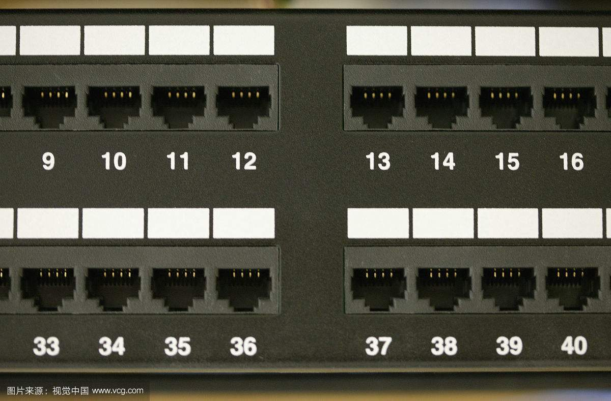
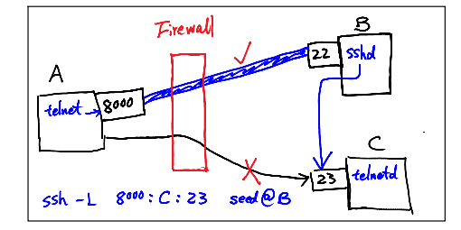
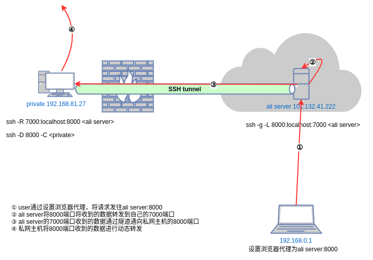

比如因为防火墙的过滤规则，你的机器A无法访问机器B的某些端口。或者因为NAT，使得外网主机无法访问内网主机，这个问题可以参考我之前的一篇博文NAT。有些时候，你在公司或者学校可能无法访问一些网站。长城导致没法访问Google等。至于为什么要有网络管制可能是一个特别有深度的问题，无法解答。有什么办法可以自由上网？
之前写过一篇关于网络层组网的博文,可以参考这里。两台机器如果想要通信，简单来说需要有网线直接或间接链接。现在假设两台机器已经直接通过网线链接，那么阻止你上网的方法就是挖断你的网线。如果两台主机并没有通过网线直接链接，那么需要用一些方法将你想发送的数据送到对端。如果使用的是TCP，那么需要一个建立连接的过程，这个可以参考我之前的一篇博文TCP与三次握手。如果使用UDP那就是直接发送不保证可靠性了。无论传输方式是虚电路还是报文交换，没有直接连接的两台机器如果要通信，实际上需要表现的像直接连接一样。
一般的网络访问都是应用与应用之间的通信，而不是主机与主机之间的通信。好比现实中发快递，不仅要填写地址，还需要写收件人，不然对端地址即使收到快递也没有意义。在网络通信中，收件人就是一个具体的应用，而一个应用就占用一个端口。可能有人会疑惑，电脑上那么多应用，但是网线只有一根。这个其实是一个历史问题，早期计算机真的是一堆接口。  后来只不过将端口的信息并入了传输层当中。这个在这里就不讨论了。
简单来说就是一系列的过滤规则。一般的过滤规则都是根据报文的发送地址，发送端口，目的地址，目的端口过滤，当然也可以根据协议过滤。感兴趣可以参考netfilter。就像现实中发快递一样，发货点可以根据收件地址和收件人选择是否给你发。而且有一点，这种规则都是地域性的。比如某大省向北京寄快递会被各种检查，我这里还好，没那么多事儿。网络上的情况也是一样，每个区域规则不同，比如国内不能访问Google，但是美国就可以。类似的这种限制，跟交通管制很像。如果这条路不让走了，那就通过绕道解决。
如果对防火墙感兴趣，可以做一下这个实验。
就是网络上的绕道。既然直接访问不行，可以曲线救国。
上图的防火墙限制了主机A不能访问外部网络的23端口，所以导致A无法与主机C建立telnet连接。但是主机B没有收到这种约束，顺理成章的可以让主机B代替主机A访问主机C的23端口。这里主机B充当了中间人的角色，需要将从A收到的数据发到C，同时将C返回的数据回执给A。幸运的是这个工作不需要重新造轮子，SSH已经具有了这个功能。SSH端口转发已经有很多人写过它的用法，这篇文章写的比较全面，值得参考。想要更多了解SSH可以参考SSH,The Secure Shell。使用SSH访问内网主机可以参考How to access a Linux server behind NAT via reverse SSH tunnel。
我通过阅读这些SSH相关的材料，掌握了它的用法之后，尝试着在公司搭个梯子，目的是我在家里也可以访问公司的内网。公司里面有个系统，只有在公司内网才能访问。如果我要从家里访问，那我需要在公司内和家里主机之间建立一条连接。但是家里的主机其实也是在内网，因为NAT的原因无法访问，公司也是。给月饼厂贡献了点钱，买了个云主机，这样就有了一个公网主机了。具体的做法用一张图简单表述了，因为搭梯子这事儿具体环境具体分析，我感觉没有万能的方法。
简单来说，上面配置之后，公网主机会将自己8000端口收到的数据发到内网主机，然后内网主机会自动转发到相应的端口。有个奇怪的地方是，公网主机将7000端口收到的数据发到内网主机的8000端口，又将自己8000端口上收到的数据转发到自己的7000端口。看上去真的是多此一举。原因是SSH的远端端口转发不支持网管模式。这个在SSH, The Secure Shell有写原因，这里直接贴出来。
You might think that the GatewayPorts feature discussed in the last section applies equally well to remote port forwardings. This would make sense as a feature, but as it happens, it isn’t done. There would have to be a way for the client to communicate this parameter to the server for a given forwarding, and that feature hasn’t been included in the SSH protocol. In Tectia, remotely forwarded ports always listen on all network interfaces and accept connections from anywhere. The OpenSSH server does accept the GatewayPorts configuration option, and it applies globally to all remote forwardings established by that server. This allows the server administrator to control whether users can bind to nonlocal sockets.
没有不透风的墙!